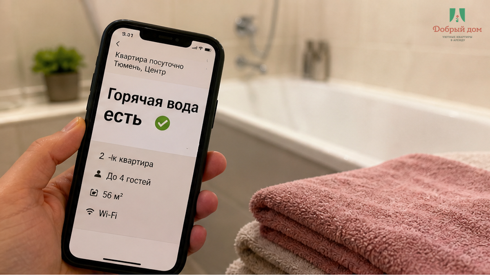
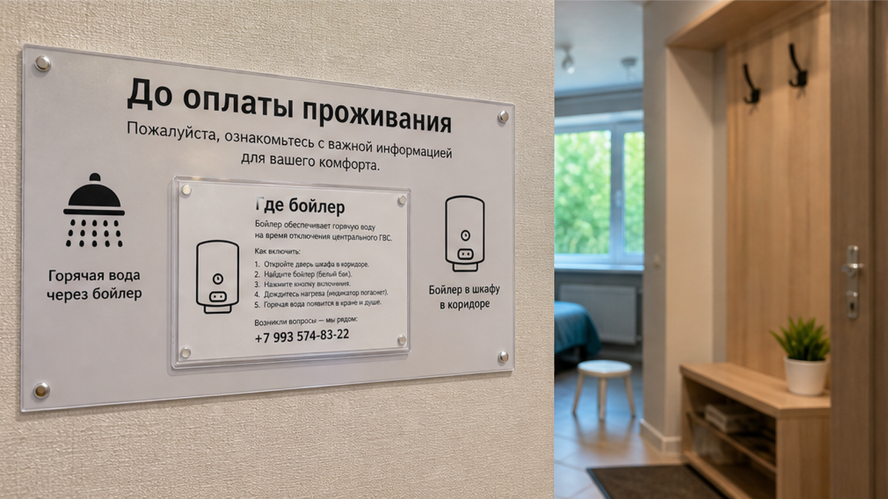
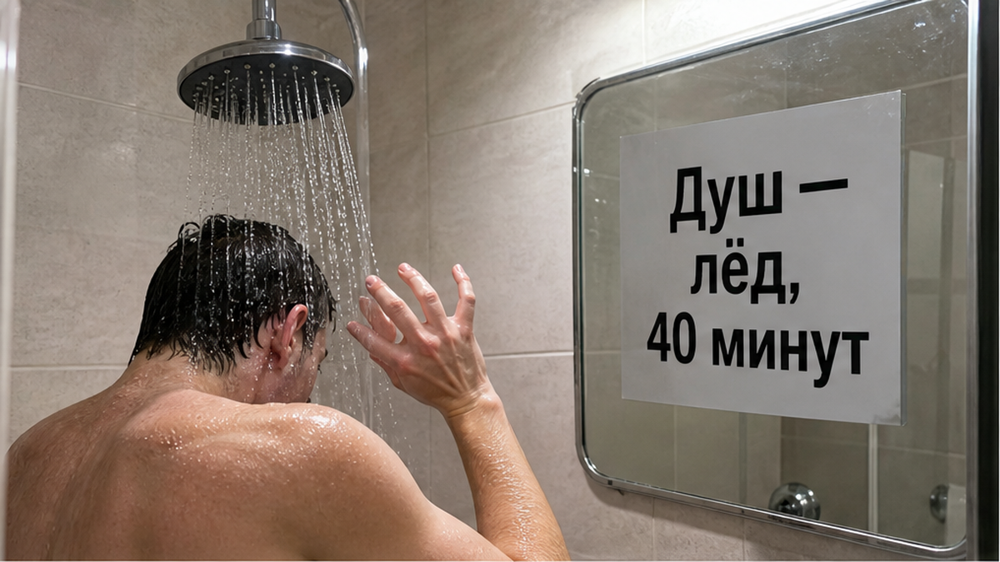
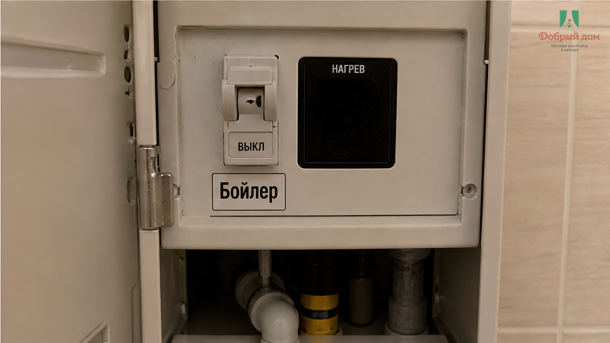

«Горячая вода есть» — так было написано до перевода денег. Рядом стояло: «всё для душа». Двое взрослых приехали в Тюмень на машине после дороги, занесли вещи, сняли обувь и примерно через десять минут включили душ. Из крана пошёл лёд. Не прохладная вода, которой нужно дать минуту, а холодная — такая же через минуту и через три.
Бойлер нашёлся в санузле. Он был выключен или показывал OFF. В сообщении о заселении не было ни слова: где прибор, какую кнопку нажать, сколько ждать после включения. Его запустили — и выяснилось, что до горячей воды ещё около 40 минут. Два человека после трассы уже заплатили, уже приехали, уже рассчитывали на душ, а теперь просто сидели и ждали, пока нагреется бак. В чате гость написал: «Я же с дороги, думал, уже всё включено».
Я хост посуточной в Тюмени. Это «Добрый дом». Пишем в Telegram и MAX. И для нас здесь важна не красивая формулировка, а состояние квартиры в тот момент, когда вы ставите сумку на пол.

Хозяин мог не врать. В квартире действительно есть бойлер. Он исправен, подключён и способен дать горячую воду. Но гость слышит в словах «горячая вода есть» другое: открыл кран — пошла горячая. Не «в санузле стоит прибор, который нужно включить и подождать», а именно готовый душ.
Вот здесь и появляется конфликт. Одно слово описывает сразу две разные вещи: оборудование и готовность. Хозяин имеет в виду первое. Гость покупает второе. Никто не произносит заведомую неправду, но важная часть смысла остаётся за кадром. Это тот же механизм, что и с обещанием «парковка рядом» — а у шлагбаума пропуска нет. Слово есть. Действия, которые делают это слово полезным, не описаны.
В начале сентября городские плановые отключения горячей воды в Тюмени уже должны были закончиться к концу августа. Поэтому ледяная вода в квартире в этот период с высокой вероятностью связана не с городом, а с самой квартирой: выключенный бойлер, режим Vacation или ECO, низкая настройка, автомат или закрытый вентиль. На центральном ГВС первые одну-две минуты после простоя вода может быть прохладной — это вода, остывшая в стояке и трубах. Но если после слива она не теплеет, нужно сразу писать хозяину и отправлять фото смесителя и бойлера.
Санитарные требования существуют, но гостю после дороги не нужна лекция о нормативах. Ему нужен душ, который работает, и человек, который отвечает за квартиру. Бойлер — нормальный резерв на период отключений. Только резерв не превращается в мгновенную горячую воду сам по себе. Если прибор был выключен, баку нужно время. В этом кейсе — около 40 минут.
Это собирательный кейс, а не разбор конкретного происшествия у нас. Технически здесь могло быть всё исправно: бойлер не протёк, автомат не выбило, город ничего не отключал. Но квартира не была передана гостю в рабочем состоянии.
До оплаты человек получил два обещания: «горячая вода есть» и «всё для душа». После входа — код, этаж, «располагайтесь». Через десять минут — ледяная вода. Потом обнаружился выключенный бойлер и выяснилось, что до душа нужно ждать ещё около 40 минут. Гость рассчитывал войти в готовую квартиру, а получил задачу самостоятельно искать прибор и запускать его.
Гость не сменный оператор и не принимает объект по технической описи. Он приехал ночевать. Всё, что требует знания именно этой квартиры, хозяин должен сделать до заселения: включить бойлер, проверить воду рукой, оставить понятную инструкцию и заранее предупредить, если нагрев не успел. Иначе первый человек после дороги оплачивает чужую недоработку своим вечером.
Цена здесь не только в сорока минутах. В цену входит душ, который нельзя принять сразу, ужин, который откладывается, прогулка, которая сокращается, и раздражение от того, что простая вещь внезапно стала квестом. Мы уже писали, почему первые и последние часы брони весят больше середины. Вечер приезда короткий. Отдавать его индикатору бойлера — плохая сделка.
В «Добром доме» правило простое: квартира должна встретить вас не обещанием, а готовым бытом. Бойлер выставляется под ближайший заезд, вода проверяется рукой, а в сообщении отдельно указывается, где находится прибор и что делать, если вода вдруг прохладная. Если что-то не готово, об этом говорят до перевода и до дороги.
И этот принцип касается не только душа. «Кухня есть» должно означать возможность приготовить еду, а не просто наличие гарнитура на фотографии. Иначе получается история, о которой мы рассказывали здесь: «кухня есть», а три вечера всё равно проходят в кафе.



Спросите хозяина одной фразой: «Где бойлер и как включить ДО душа?»
Важно спросить именно до оплаты. Конкретный ответ звучит так: прибор находится в санузле, его включают перед приездом, горячая вода будет к заселению. Или хозяин честно говорит: включать нужно самостоятельно, нагрев займёт около часа. Это не идеальный сценарий, но вы хотя бы понимаете, что ждёт вас после дороги.
Ответ «не переживайте, горячая вода есть» ничего не уточняет. Если человек не может объяснить, где бойлер и кто его запускает, после заселения может повториться та же тишина. Мы уже разбирали ситуацию, когда после предоплаты в чате наступает молчание: перевели деньги — и к вечеру ответа нет.
Если вода холодная, сначала дайте центральному ГВС одну-две минуты на слив. Не потеплела — не тратьте полчаса на догадки. Напишите хозяину, приложите фото положения смесителя и дисплея бойлера. Если он просит проверить автомат, делайте это только по его прямому указанию и не лезьте самостоятельно в чужую электрику.
Спорный вопрос: 40 минут нагрева после входа — это обычная бытовая задержка или повод сразу писать хозяину? Ответ найдёте у нас в Telegram или MAX. Там можно описать ситуацию и получить человеческий ответ, а не ждать, пока спор решится сам.
Сначала проверка. Потом перевод. Не наоборот. Сначала кран и бойлер — потом ключ и ночь. «Нет. Так не заселяем.»
Горячая вода — это не бак, прикрученный к стене, и не строка в объявлении. Это как заправленная машина: можно долго доказывать, что бак есть и он исправен, но без готового топлива вы всё равно стоите на обочине. «Есть» без готовности — пустой бак с красивой крышкой.
Нужна посуточная квартира в Тюмени с готовым душем? Напишите менеджеру в Telegram или нам в Telegram, также можно обратиться через MAX.
Сайт «Добрый дом» · забронировать квартиру · телефон: +7 (993) 574-83-22.